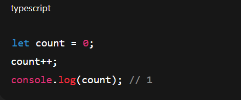

Why Do We Need Change Detection?
JS knows the value changed, but your HTML doesn’t magically update.
Angular solves this problem using Change Detection, which checks your component’s data and
re-renders the HTML when it finds any change.
How Angular Detects Changes (Behind the Scenes)?
Angular’s change detection system runs through something called Zone.js.
- You click a button / input / event / API resolves.
- Zone.js catches that asynchronous event (e.g., click, setTimeout, promise).
- Angular’s Change Detection cycle starts.
- Angular checks each component’s data → re-renders HTML if needed.
- The screen updates automatically.
This entire cycle happens many times per second — Angular ensures the view always reflects the latest state.
🔍 Change Detection Strategies (2 Modes)
| Strategy | Mode | Description |
|---|---|---|
| Default | ChangeDetectionStrategy.Default | Angular checks every component on every event |
| OnPush | ChangeDetectionStrategy.OnPush | Angular checks only when inputs or signals change |
🧩 Default Strategy
How it works:
Any event (click, input, timeout, promise, etc.) triggers change detection for the entire app tree.
Angular re-checks all components, even if their data hasn’t changed.
✅ Easy to use
❌ Can cause performance overhead in large apps
⚡ OnPush Strategy
How it works:
If you mark a component as OnPush, Angular becomes smarter.
One of its @Input() values changes (new reference)
An event originates from inside it (like a button click)
You manually trigger detection (markForCheck() / detectChanges())
✅ Super-fast
✅ Used in production-level optimized apps
❌ You must understand immutability (new object reference needed)
Name will update here after few seconds...
{{name}}{{status}}
{{tsCode}}
| Strategy | Description | Angular Checks | Performance |
| ----------- | ------------------------------------- | ------------------- | ---------------- |
| **Default** | Always re-checks everything | All components | Easy, but slower |
| **OnPush** | Checks only when inputs/events change | Selected components | Fast, efficient |
| Method | From | What It Does |
| ----------------- | ----------------- | -------------------------------------------------- |
| `markForCheck()` | ChangeDetectorRef | Marks component and ancestors for re-check |
| `detectChanges()` | ChangeDetectorRef | Immediately run change detection manually |
| `detach()` | ChangeDetectorRef | Stop automatic change detection for this component |
| `reattach()` | ChangeDetectorRef | Re-enable detection |
Imagine a security guard 👮♂️ checking rooms in a building 🏢
Default Mode:
Every time someone opens any door in the building,
guard goes and checks all rooms, even if nothing changed.
👉 நல்லது for small building,
❌ waste of time for big one.
OnPush Mode:
Guard checks only rooms that got new guests (input changed)
or rooms where someone pressed the bell (event triggered).
👉 Much faster and efficient ⚡
அதாவது 👇
“Default” mode-ல எல்லா component-மும் check ஆகும்,
“OnPush” mode-ல input change ஆன component மட்டும் check ஆகும்
| Symptom / Observation | Reason | Fix |
| ----------------------------------------------------------- | ------------------------------------ | --------------------------------------------- |
| ✅ Variable updates in console but ❌ UI doesn’t change | Change happened outside Angular Zone | Use `ChangeDetectorRef.detectChanges()` |
|
| @Input object changed internally but UI didn’t update | Mutated same reference | Use immutable update OR `markForCheck()` |
|
| Component uses OnPush but doesn’t refresh after API success | Async call finished outside Angular | Use `markForCheck()` inside subscription |
|
| Data arrives via WebSocket / external library callback | External events not inside zone | Wrap with `ngZone.run()` or `detectChanges()` |
|
| UI doesn’t reflect after 3rd-party SDK updates | SDK runs outside Angular | Wrap callback in `ngZone.run()` |
|
| You detached change detection for performance | You paused CD manually | Use `detectChanges()` when needed |
Angular automatically updates your UI only for changes it knows about (inside its zone).
If a change happens outside that context — Angular doesn’t see it.
That’s when manual change detection becomes your best friend. 💪
“Angularக்கு தெரியாம data change ஆகுறதுனால UI update ஆகாதா? அப்போ நீங்கதான் சொல்லணும் — ‘இப்ப புதுசா check பண்ணு!’ — அதுதான் detectChanges() 😄”
What Is NgZone (a.k.a. Angular Zone)?
NgZone is a service that helps Angular know when something asynchronous happens, so that it can automatically trigger change detection and update your UI.
⚙️ So, you can think of NgZone as:
A watchdog 🐶 that sits outside your component and watches for all async tasks in your app —
clicks, timeouts, HTTP calls, promises, WebSockets, etc.
When It Fails (Outside Angular Zone)?
Sometimes, code runs outside Angular’s zone —
for example, inside certain 3rd-party libraries, heavy background tasks, or manual optimization.
When that happens 👇
Angular doesn’t get notified → UI won’t update.

Think of Angular as a supervisor 🧑💼 sitting inside a room (Angular Zone).
If your work happens inside the room,
the supervisor sees it and updates the status board (UI) immediately. ✅
If you go outside the room and finish some work,
the supervisor doesn’t know anything changed. ❌
So, when you come back inside the room,
you must say →
“Hey, boss, I’m back! Update the board!”
→ that’s this.ngZone.run() ✅
| Method | Description | Use Case |
| ------------------------------------ | ---------------------------------------------- | ------------------------------------------------ |
| `ngZone.run(callback)` | Runs inside Angular’s zone | Ensures Angular detects and updates the UI |
| `ngZone.runOutsideAngular(callback)` | Runs code outside Angular’s zone | Prevents unnecessary CD cycles (for performance) |
| `ngZone.onStable` | Observable that fires when Angular finished CD | Useful for debugging or timing tasks |
| `ngZone.isStable` | Boolean, whether Angular is currently stable | Performance/debug use |
*********
🔹 Angular Zone (NgZone) = the area where Angular automatically listens for async operations and runs change detection.
🔹 Anything done inside that zone → UI updates automatically.
🔹 Anything done outside → you must tell Angular manually when to refresh.
*********
“Angular Zoneன்னா — Angular alert-ஆ இருக்கும் area.
அந்த zone-க்கு வெளியே data change ஆச்சுன்னா Angular-க்கு தெரியாது.
அதனால நீங்களே சொல்லணும் — ‘நா update பண்ணேன், UI refresh பண்ணு!’ — அதுதான் ngZone.run() 😄”